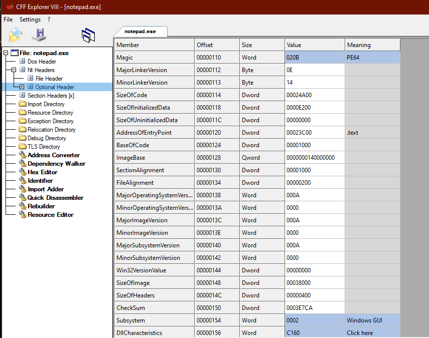

PE Optional Header
The PE Optiona Header contains info related to loading the PE into memory: its base address, entry point, etc.
https://docs.microsoft.com/en-us/windows/win32/api/winnt/ns-winnt-image_optional_header32PIMAGE_DOS_HEADER dos_header = NULL;
PIMAGE_NT_HEADERS pe_header = NULL;
PIMAGE_FILE_HEADER coff_header = NULL;
dos_header = file_buffer;
pe_header = (PIMAGE_NT_HEADERS)((DWORD_PTR)dos_header + (DWORD_PTR)dos_header->e_lfanew);
coff_header = &pe_header->FileHeader;
pe_optional_header = &pe_header->OptionalHeader;
printf("PE optional header @ 0x%p \n", &pe_header->OptionalHeader);
printf("\t magic: 0x%x \n", pe_header->OptionalHeader.Magic);
printf("\t entry point: 0x%p \n", pe_header->OptionalHeader.AddressOfEntryPoint);
printf("\t base address: 0x%p \n", pe_header->OptionalHeader.ImageBase);
printf("\t subsystem: %d \n", pe_header->OptionalHeader.Subsystem);
### Values of Interest
Magic ◇ whether the file is 32bit or 64bit
◇ 0x10b = PE32 0x20b = PE64
AddressOfEntryPoint ◇ offset to the entry point function
ImageBase ◇ the preferred base address of the PE when it's loaded into memory
◇ 0x00400000 is default for 32bit PEs
◇ 0x0000000140000000 is default for 64bit PEs
Subsystem ◇ whether the PE is a GUI applicatoin, a console application, a boot application, etc.
◇ 2 = GUI
◇ 3 = Console